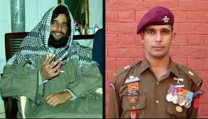
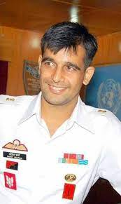
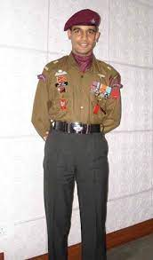

Mohit Sharma

Major Mohit Sharma AC SM[2] (13 January 1978 – 21 March 2009) was an Indian Army Officer who was posthumously awarded the Ashoka Chakra, India's highest peace-time military decoration. Maj Sharma was from the elite 1st Para SF.
About
Mohit Sharma was posted to Kashmir where he displayed his bravery and dedication for the country. During his time in Kashmir, in 2004, Mohit was given the mission to infiltrate the group of Hizbul Mujahideen and get some crucial intel about their operations and plans. He successfully established contact with two terrorists of the Islamic group under the name Iftikhar Bhatt. Mohit grew his beard and hair long to fit the stereotypical look of a terrorist to make it easier for him to blend in the group.Interesting facts
- Major left Engineering and joined NDA to pursue his dream.
- During his NDA training, he excelled in multiple activities including swimming, boxing and horse riding
- Under the training of Col Bhawani Singh, became the champion of horse riding.
- He was also a winner in Boxing under feather weight category
Facial Expressions


